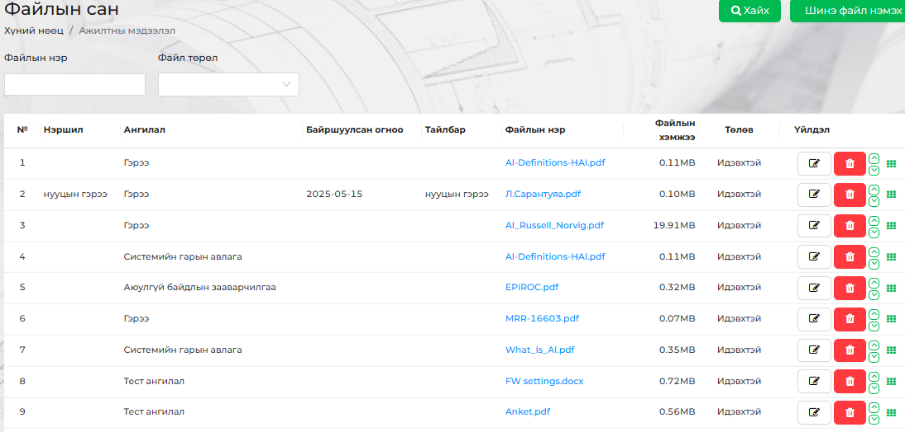
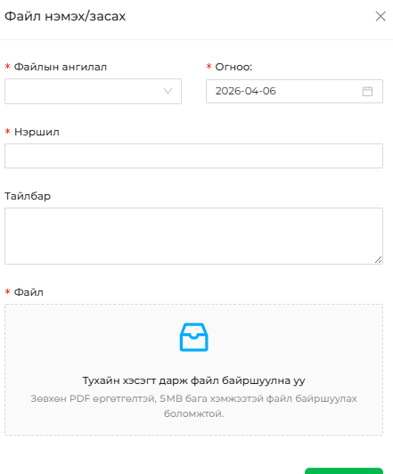

<h2 style="background-color: skyblue;">Файлын сан</h2>
<p><div style="display: flex; justify-content: center; align-items: center;">
    
</div></br>
<br>Хүний нөөцтэй холбоотой бичиг баримтыг эндээс харна.</br>
<h4><u>Файл нэмэхэд харагдах зүйлс</u></h4>
<br><div style="display: flex; justify-content: center; align-items: center;">
    
</div>
<figure style="text-align: center;">
    <figcaption style="color: red;">* - тэмдэглэгээтэй талбаруудыг заавал бөглөхийг анхаарна уу !</figcaption>
</figure></br>
